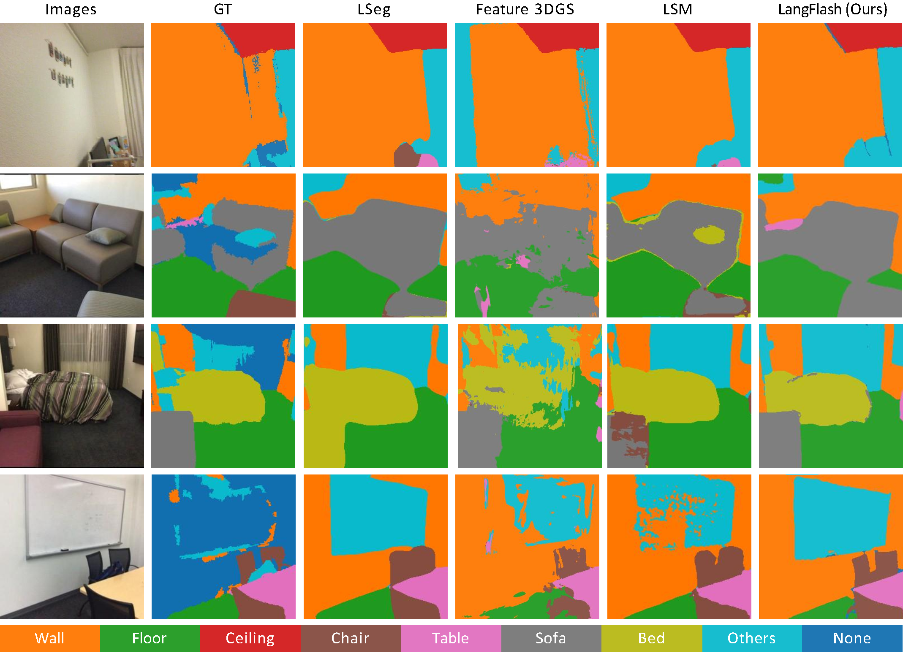
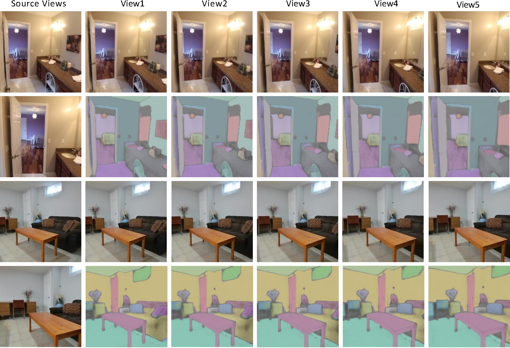
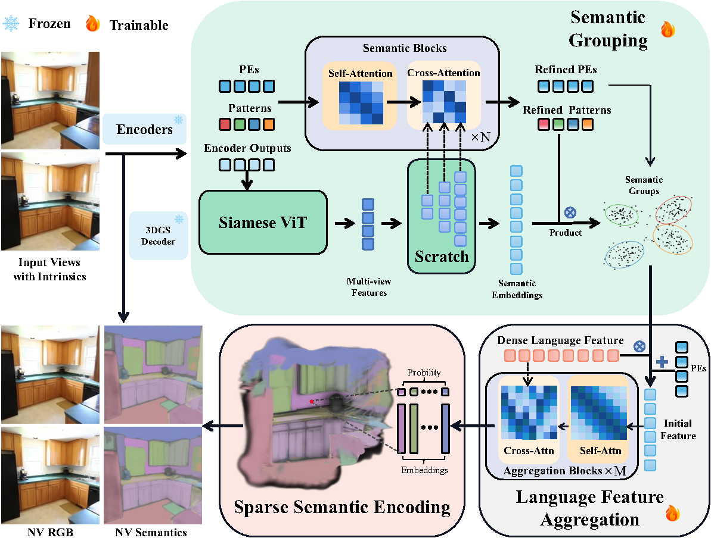

Quantative Comparisons of novel-view segmentation on Scannet.

Quantative Results on RE10k.

We present LangFlash, a feed-forward framework for 3D Language Gaussian Splatting that reconstructs 3D scenes parameterized by Gaussian primitives enriched with language-aligned semantic features from sparse unposed multi-view images.
Unlike optimization-based 3D methods, LangFlash directly predicts geometry and semantics in a single forward pass, enabling real-time 3D reconstruction and language-consistent scene understanding. To support large-scale training, we introduce an efficient continuous language labeling strategy on RE10k, producing dense 3D semantic supervision without requiring camera poses.
Furthermore, we propose a sparse semantic encoding scheme that preserves high-level linguistic information while reducing inference complexity. Experimental results show that LangFlash achieves superior novel view synthesis and semantic consistency compared to previous methods. This work establishes a new paradigm for pose-free, language-grounded 3D scene reconstruction, advancing generalizable 3D vision and multimodal scene understanding.

Overall Framework of LangFlash. Features extracted by the shared image encoders are first passed to a pretrained 3D Gaussian decoder to reconstruct scene geometry. In parallel, learnable positional embeddings, learnable patterns, and encoder outputs are processed by the semantic grouping module. The resulting groups, together with the refined positional embeddings, are then fed into the language feature aggregation stage, where coarse dense language features from pretrained CLIP-like model are further refined to produce the final embeddings for each selected group. Outputs from all preceding modules are finally integrated to form the complete 3D semantic representation.

